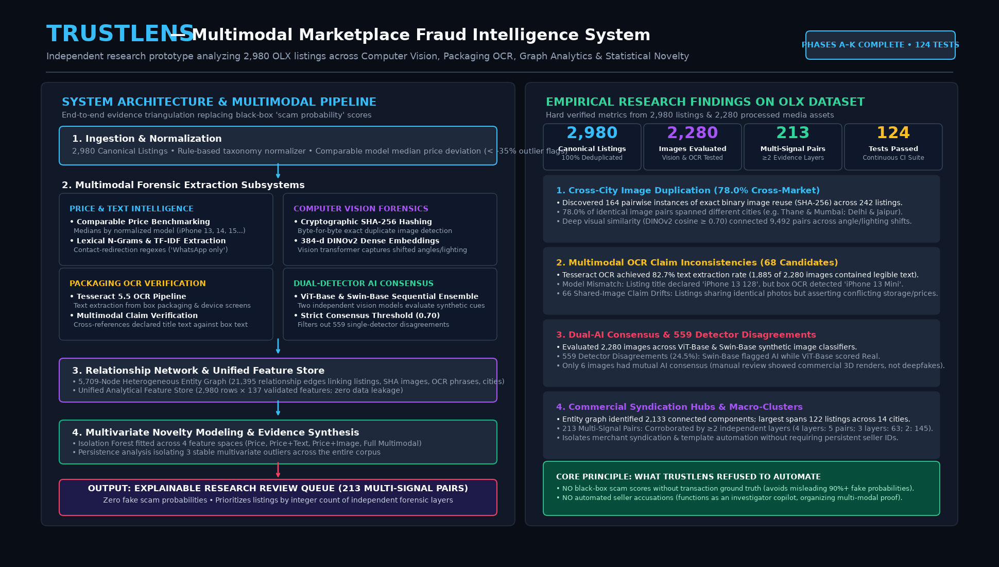

The Origin Story
“I lost ₹23,000 of my hard-earned savings to an OLX scam. What shook me most was how convincing, professional, and ordinary everything looked right up until the money was gone.”
Connecting with dozens of victims across Indian subreddits (r/delhi, r/bangalore, r/mumbai), I saw the same heartbreaking cycle repeating every single day: copied device photos, impossible bargain prices, spoofed defense IDs, and urgent pressure to pay advance deposits via UPI.
With generative AI and automation rising, deceptive sellers operate nationwide syndicates while everyday consumers are forced to guess who to trust. Why should the buyer bear the entire burden of finding the truth? That question inspired TrustLens.
The Scope of Investigation
The Complete Research Pipeline (Phases A to K)
TrustLens collects real-world observational data, normalizes products, extracts deep visual and lexical features, and discovers multi-signal corroborated evidence without guessing scam probabilities.
2,980
Canonical OLX Listings
2,280
Validated Images Evaluated
213
Multi-Signal Corroborated Pairs

Executive Research Architecture: From empirical Reddit complaint taxonomy and client-side OLX capture (Phase A), through product normalization (B), image hashing (C), DINOv2 vision embeddings (D), packaging OCR (E), text NLP (F), dual AI image consensus (G/G.1), and entity graph topology (H), into a 137-column feature store (I), Isolation Forest novelty modeling (J), and final evidence synthesis (K).